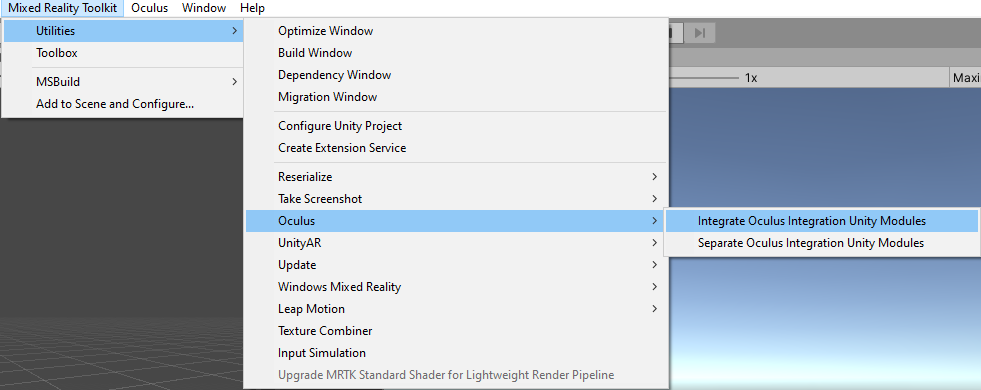
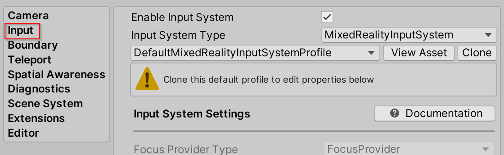

XRSDK パイプラインを使った MRTK での Oculus Quest の設定方法
Oculus Quest が必要です。
MRTK による Oculus Quest のサポートは 2 つの異なるソースを介して提供されています。それは Unity の XR パイプラインと Oculus Integration Unity パッケージです。 Oculus XRSDK Data Provider を利用することで両方のソースを利用することができ、Oculus Quest で MRTK を利用するにはこれを使う必要があります。
Unity の XR Pipeline によって、Oculus Touch コントローラーと Oculus Quest のヘッド トラッキングが利用可能です。 このパイプラインは Unity 2019.3 以降で XR アプリケーションを開発するための標準となっています。このパイプラインを使うには、Unity 2019.3 以降 を使っていることを確認してください。
Oculus Integration Unity パッケージ によって、Oculus Quest での ハンド トラッキング が利用できます。 このデータ プロバイダーは Unity の XR Pipeline や Legacy XR Pipeline は利用しませんが、コントローラーとヘッド トラッキングは Unity の XR Pipeline で処理されます。 そのため、廃止予定の Legacy XR Pipeline ではなく XR Pipeline を使っていることを確認するために Oculus Quest のためのプロジェクトのセットアップ のステップを実行する必要があります。
Oculus Quest のためのプロジェクトのセットアップ
これらのステップ にしたがって、プロジェクトを Oculus Quest へデプロイする準備ができていることを確認してください。
デバイスで開発者モードが有効化されていることを確認してください。Oculus ADB Drivers のインストールはオプションです。
Oculus Quest のための XR Pipeline のセットアップ
Window --> Package Manager 内で Oculus XR Plugin がインストールされていることを確認してください。

Edit --> Project Settings --> XR Plug-in Management --> Plug-in Providers を開いて、プロジェクトに Oculus Plug-in Provider が含まれていることを確認してください。

ハンドトラッキングを有効化するための Oculus Integration Unity パッケージのセットアップ
Unity Asset Store から Oculus Integration をダウンロードしインポートします。 動作確認されている最新バージョンは 20.0.0 です。古いバージョンはアーカイブにあります。
Mixed Reality Toolkit > Utilities > Oculus > Integrate Oculus Integration Unity Modules を選択します。これを行うことで、関連する Oculus Quest のコードを機能させるために必要な asmdef の定義と参照を更新します。 また、Oculus Integration アセットが出す Obsolete (廃止予定) の Warning をフィルタリングするため、csc ファイルの更新も行います。MRTK のリポジトリには Warning を Error に変換する csc ファイルが含まれており、この変換で MRTK-Quest の設定プロセスが停止します。

インポートされた Oculus フォルダ (Assets/Oculus にあるはずです) の中に、OculusProjectConfig というスクリプタブル オブジェクトがあります。 この設定ファイルで、HandTrackingSupport を "Controllers and Hands" に設定する必要があります。
シーンのセットアップ
- 新しい Unity シーンを作成するか、HandInteractionExamples のような既存のシーンを開きます
- Mixed Reality Toolkit > Add to Scene and Configure を選択し、シーンに MRTK を追加します
Oculus XRSDK Data Provider の利用
- Oculus XRSDK Data Provider を使ってプロファイルを設定します
設定プロファイルを変更するつもりがない場合
- プロファイルを DefaultXRSDKInputSystemProfile に変更し、プロジェクトのビルドと Oculus Quest へのデプロイ を行います
変更する場合は、以下を実行します
- ヒエラルキーで MixedRealityToolkit ゲーム オブジェクトを選択し、Copy and Customize を選択してデフォルトの Mixed Reality プロファイルをクローンします。
- Input の設定プロファイルを選択します。

- Input System プロファイルで Clone を選択し、変更可能にします。
- Input Data Providers セクションを開き、一番上の Add Data Provider を選択すると、新しいデータ プロバイダーがリストの最後に追加されます。新しいデータプロバイダーを開き、Type を Microsoft.MixedReality.Toolkit.XRSDK.Oculus > OculusXRSDKDeviceManager に設定します。

Oculus Controller が認識されることを確認します。
プロジェクトのビルドと Oculus Quest へのデプロイ
Oculus Quest を USB 3.0 -> USB C ケーブルで接続します
File > Build Settings を開きます
デプロイメントを Android へと変更します
対象の Run Device (実行デバイス) として Oculus Quest が選択されていることを確認します

Build And Run を選択します
- 初めて Build And Run を選択した際は以下のようなビルド エラーが発生する可能性があります。再度 Build And Run を選択するとデプロイに成功するはずです。

Quest 内で USB デバッグの許可 プロンプトを承認します
Oculus Quest 内で作成したシーンが表示されます
Oculus Integration のプロジェクトからの削除
- Mixed Reality Toolkit > Oculus > Separate Oculus Integration Unity Modules を選択します

- このステップで Microsoft.MixedReality.Toolkit.Providers.Oculus.asmdef や他のファイルの参照が変更されるので、Unity のリフレッシュを待ちます
- Unity を閉じます
- Visual Studio が開いている場合は閉じます
- File Explorer を開き、MRTK Unity プロジェクトのルート フォルダを開きます
- UnityProjectName/Library ディレクトリを削除します
- UnityProjectName/Assets/Oculus ディレクトリを削除します
- UnityProjectName/Assets/Oculus.meta ファイルを削除します
- 再度 Unity を開きます
よくあるエラー
Quest が Unity に認識されない
Android のパスが適切に設定されていることを確認してください。引き続き問題が発生する場合は、こちらのガイドに従ってください。
Edit > Preferences > External Tools > Android